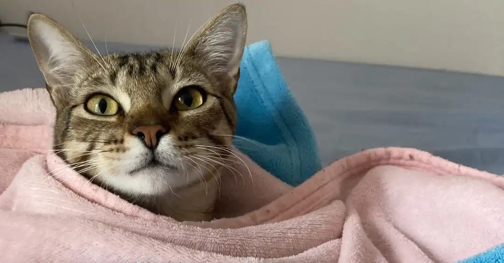
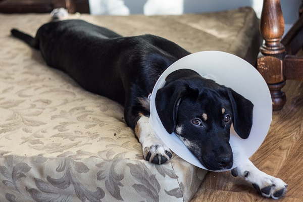
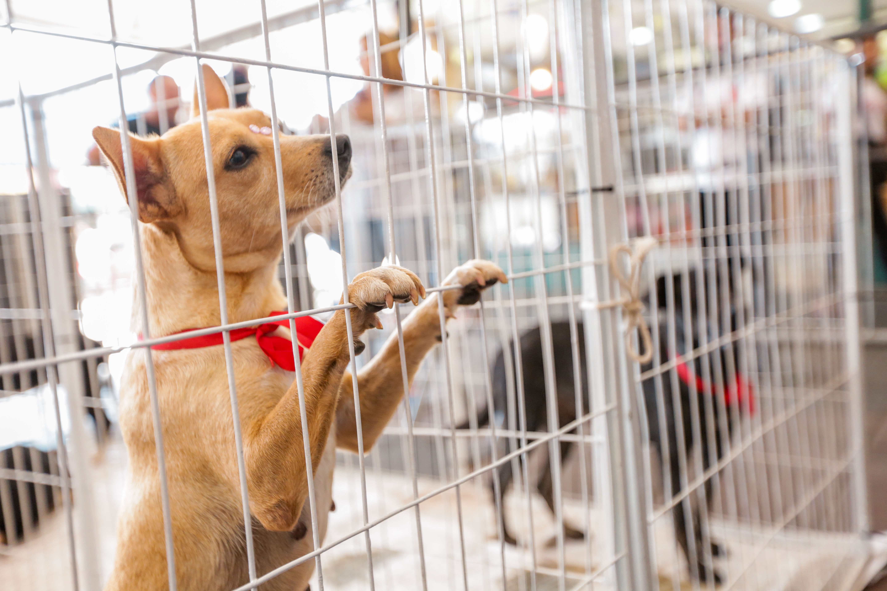

Adotar um novo amigo é um momento de grande alegria, mas também de muitas dúvidas. A adaptação do pet ao novo lar é um processo que exige paciência e carinho. Neste post, separamos algumas dicas essenciais para tornar essa transição mais tranquila para todos...
Leia Mais →

A castração é um ato de amor e responsabilidade. Além de prevenir o aumento do número de animais de rua, ela traz inúmeros benefícios para a saúde do seu pet. Vamos desmistificar alguns pontos e mostrar por que você deve considerar a castração...
Leia Mais →

Nossa última feira de adoção foi um sucesso! Graças à ajuda de voluntários e da comunidade, 15 de nossos resgatados encontraram um novo lar. Veja as fotos e se emocione com as histórias de recomeço...
Leia Mais →